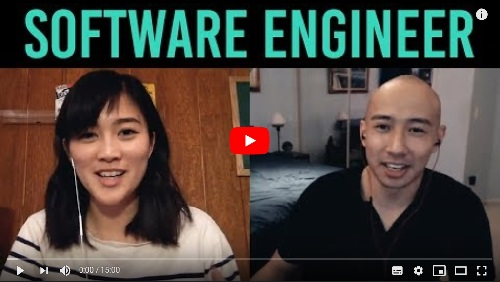

In today's society, working with computers is becoming more and more popular.
| IT Occupation Title | #IT Jobs Q2 2017 | #IT Jobs Q2 2018 |
|---|---|---|
| Software Developers, Applications | 176,530 | 227,477 |
| Computer Systems Analysts | 36,549 | 50,593 |
| Web Developers | 40,789 | 47,028 |
| Information Security Analysts | 26,269 | 35,295 |
| Network and Computer Systems Administrators | 26,113 | 34,103 |
These ideas are based on video Software Enginner: Reality vs Expectations 3 from Youtube Channel ENGINEERED TRUTH:
Software Engineer: Reality vs Expectations

Of course there are lots and lots to learn, but here are some basics:
Source: Collaboration in the work place
Unlike many people think, software engineers don't work seperately. They collaborate, they talk and discuss. While developing a new function, or creating a new app, it is
necessary, maybe even obligatory for everyone to exchange ideas, help each other figure things out. Many brains are better than a brain. Besides, the ability to cooperate
is what many companies or graduate schools are looking for in an application. With that being said, our class has many activities that would help develop our ability to work as a
team, such as lab work in pairs, peer assessed.

Source: What is soft skills?
The second truth that Mayuko mentioned in the video is that Soft skills are as important, or maybe more important than technical skills.
But first, what are soft skills?
Soft skills are the personal attributes, personality traits, inherent social cues, and communication abilities needed for success on the job. Soft skills characterize how a person interacts in his or her relationships with others. Soft skills include adaptability, attitude, communication, teamwork, time management,...So the problem is, not just you have to be good at your field of study, but you also have to be a nice person, know how to finish your work on time, treat others in the right way.
a better communicator. And having to submit our work on time is the chance for us to polish our time-management skill. Being prepared, engage in class,... these are things that we need to develop better soft skills.

Source: Be yourself
The next thing we need to know is being yourself and being a successful engineer can go together.
Not all engineers wear glasses. Not all engineers wear hoodie and jeans to work. Not all engineers start programming since junior high school.
Everyone has their own style, and work at their own pace. You're not a billionare at 30? No problem. You only begin coding in college? Still no problem. You don't pass this class?
Unfortunately yes, it's a problem.
It's okay to be yourself and do what you want, but not in a negative way of course.
There are many and many more people join the engineering community. Find yourself a role model that has the same background as you, like if you're an Asian girl you can take
Mayuko as your model. Everything's easier when you know you're not alone.
Yet, you can express yourself in class by adding your own features into your website, or stuff like that.
Source: Looking at others through their eyes
Alfred Adler, an Australian medical doctor and psychotherapist said:
"Empathy is seeing with the eyes of another, listening with the ears of another and feeling with the heart of another."Like we mentioned in the previous part, everyone has their own pace. A task can be easy for you, but others can feel difficulty doing it. If you choose to laugh at them and say things like that's the easiest problem I've ever seen and you still can't do it, that means you have no empathy. Empathy is a soft skill that need so much time and patience to master. Here in this class, you can practice it through reading others' code. Understand why they write it, not judging them like
Ew this is so awful.
So, above are elements from the video and syllabus. A couple more things that I think is also important:
Thank you for reading this website! If you have any comments, or you want me to add something, please email me at: Email me